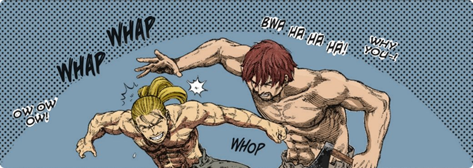
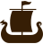
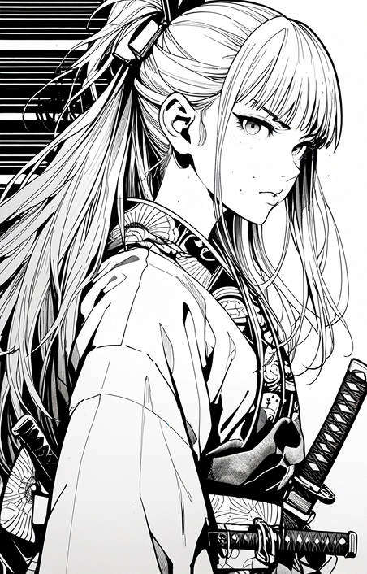
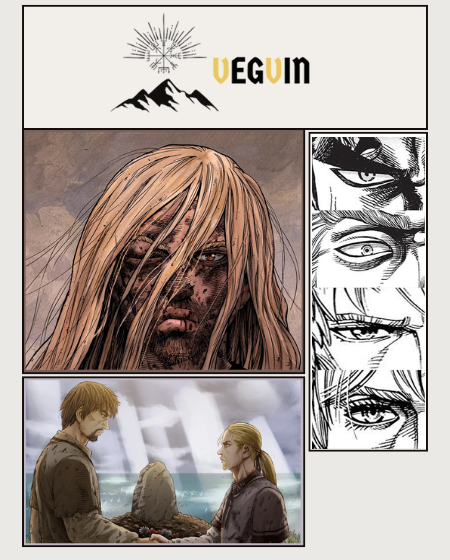

VegVin: Vinland Fórum
Faça parte você também! Descubra o que é um verdadeiro guerreiro!

Após o assassinato do pai, o jovem Thorfinn entra para o bando de mercenários comandado pelo assassino e tenta encontrar a chance perfeita de se vingar.

Vegvin
Este projeto, foi feito com o intuito de tentar fazer as pessoas serem melhores. Eu, pessoalmente acredito que pessoas podem mudar, pessoas podem se tornar melhores. Algo mal pode virar algo bom, onde existe raiva pode existir amor. Thorfinn é um exemplo de arrependimento e redenção, e este projeto busca justamente isso, que pessoas possam rever suas atitudes e pensar um pouco.
Thorfinn: "Eu me pergunto, pessoas podem realmente mudar? O que precisa se fazer pra mudar?
Einar: Você costumava a ser um guerreiro, não?
Thorfinn: Hum? Sim.
Einar: E guerreiros são homens destemidos que carregam seus machados, vão para a guerra e
pilham, certo?
Olhe para si mesmo, nenhuma pessoa imaginaria que você já foi um guerreiro, sabia?
Pessoas podem mudar, você, provavelmente, está no meio de uma transição para uma
pessoa
melhor."

FALE CONOSCO
Assunto